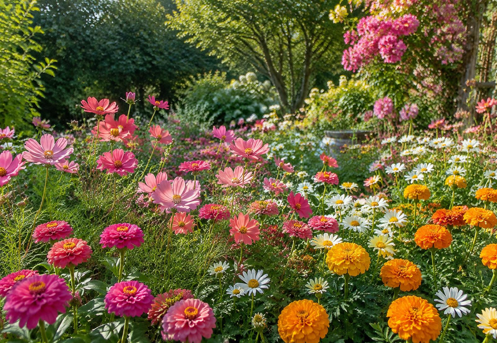
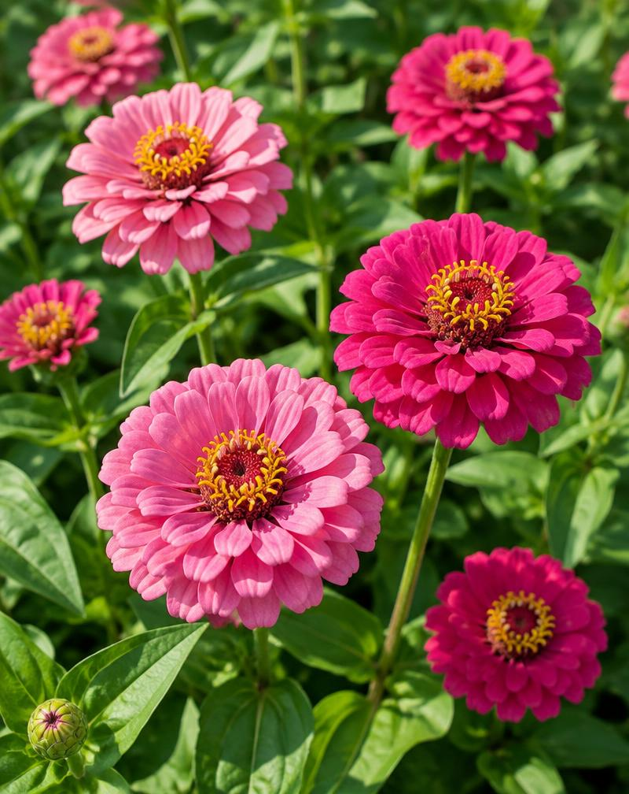
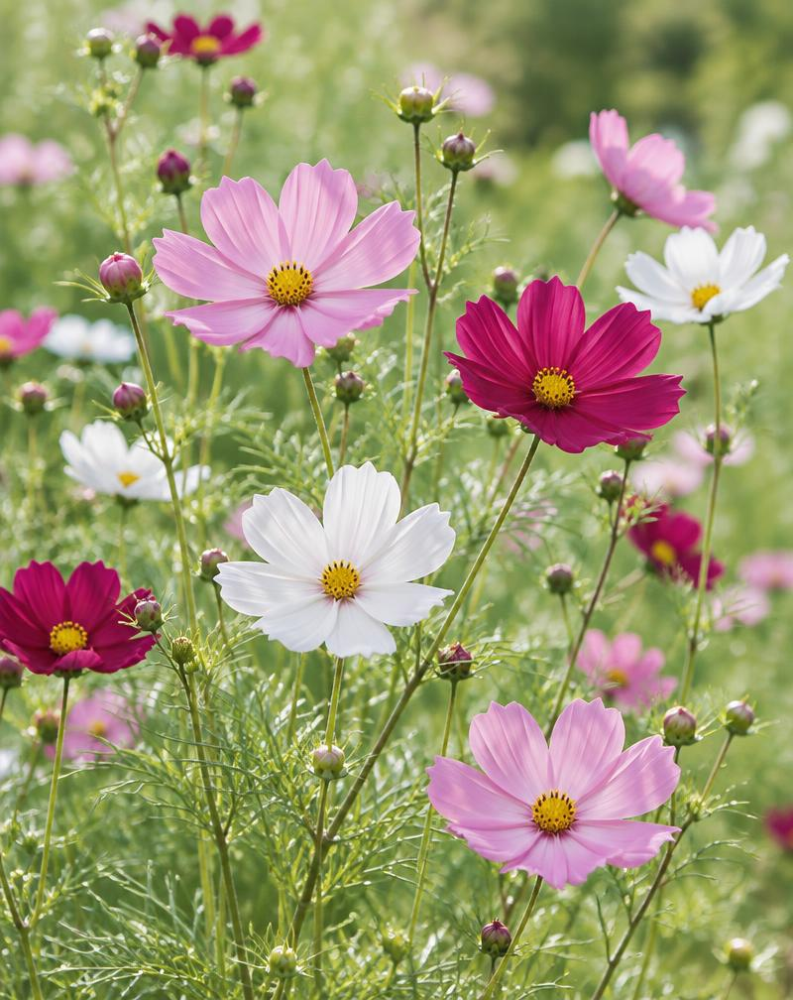
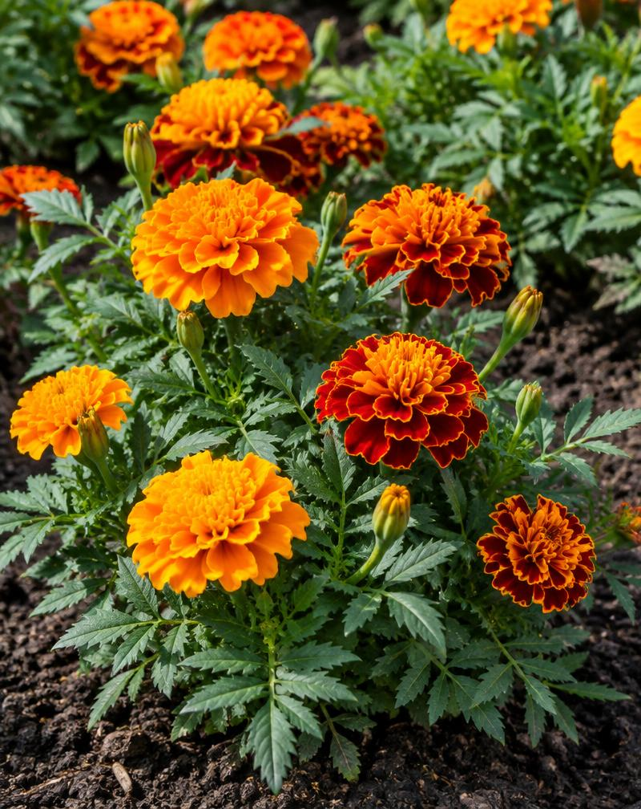
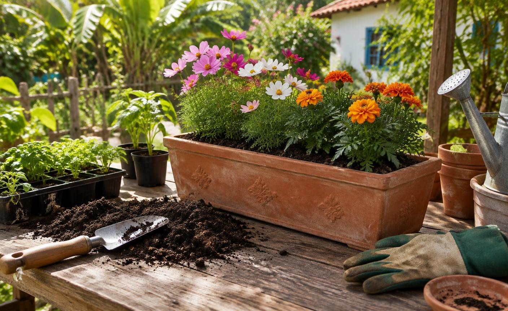
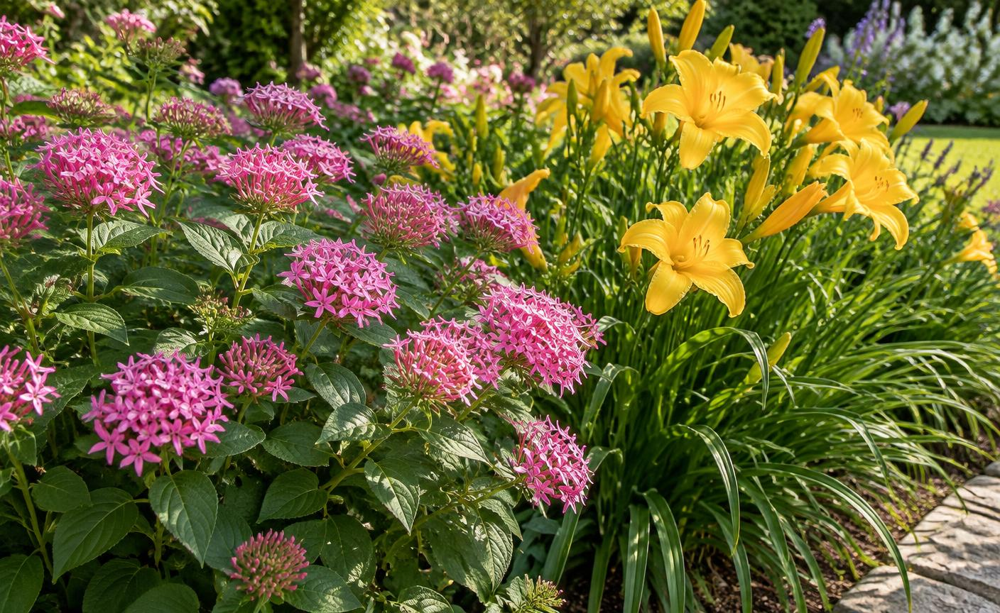

✺ Uma estação
Anuais
Germinam, crescem, florescem, produzem sementes e encerram a vida em um único ciclo, geralmente dentro de um ano.
Exemplo: girassol
Helianthus annuus

Um jardim de
descobertas.
Da primeira semente à flor aberta, um convite para cultivar beleza, paciência e conhecimento.
Um jardim começa muito antes da primeira flor. Começa ao observar a luz, conhecer o solo e descobrir o ritmo de cada planta. Floricultura é a arte e a prática de cultivar plantas que florescem.
Este estudo reúne os conhecimentos da especialidade dos Desbravadores e os caminhos para colocá-los em prática. As experiências de cultivo e o diário precisam ser realizados por você, com acompanhamento do instrutor.
O ciclo de vida ajuda a planejar o canteiro — e a saber o que esperar da próxima estação.
Germinam, crescem, florescem, produzem sementes e encerram a vida em um único ciclo, geralmente dentro de um ano.
Exemplo: girassol
Helianthus annuus
Vivem por mais de dois anos. Podem florescer em várias estações; algumas entram em repouso e voltam a crescer.
Exemplo: hemerocale
Hemerocallis spp.
Em geral, formam raízes e folhas no primeiro ano; no segundo, florescem, produzem sementes e morrem.
Exemplo: dedaleira
Digitalis purpurea
Três anuais para acompanhar um ciclo completo. Sol, água na medida e um pouquinho de atenção todos os dias.

Semeie cerca de 0,5–1 cm de profundidade no local definitivo ou em células individuais. Desbaste as mudas para evitar competição. Regue o solo, não as folhas: boa ventilação ajuda a prevenir o oídio. Cultivares altas podem precisar de tutor.

Cubra as sementes com aproximadamente 0,5 cm de terra fina. Prefere solo bem drenado, sem excesso de adubação nitrogenada, que favorece folhas em vez de flores. Desbaste e apoie as variedades altas em locais com vento.

Semeie a aproximadamente 0,5 cm de profundidade. Pode começar em bandeja e ser transplantado com o torrão intacto, depois de formar folhas verdadeiras. Mantenha umidade leve na germinação e deixe a superfície secar um pouco entre regas após o pegamento.
Prazos aproximados desde a semeadura, em condições favoráveis. A variedade, a temperatura e a época alteram o resultado; confira o envelope das sementes. Sol pleno corresponde, em geral, a pelo menos 6 horas de sol direto por dia.

O solo sustenta, fornece nutrientes e equilibra água e ar. Antes de adubar, conheça o que ele já oferece.
Drenagem é a retirada ou o escoamento do excesso de água do solo e do recipiente. Sem ela, os poros ficam ocupados por água, falta oxigênio às raízes e aumenta o risco de apodrecimento.
A análise química mede a acidez (pH) e indicadores de fertilidade, como nutrientes disponíveis e matéria orgânica. Ela orienta a necessidade e a quantidade de calcário e fertilizantes, evitando excessos, desperdício e desequilíbrio.
Como coletar: antes de adubar, separe áreas com solo ou histórico diferentes. Em cada área homogênea, retire a cobertura superficial e colete várias subamostras, normalmente de 0–20 cm para o canteiro. Misture em balde limpo e envie a porção pedida pelo laboratório, identificada.
Não colete junto a montes de adubo, compostagem ou pontos atípicos. Siga o número de pontos e as instruções do laboratório local.
Participa das proteínas e da clorofila. Sustenta folhas e crescimento, que produzem energia para a planta. Em excesso, pode gerar muita folhagem e atrasar a floração.
Participa da transferência de energia, do desenvolvimento e da reprodução. É necessário para flores e sementes, mas acrescentar mais do que a planta precisa não cria mais flores.
Ajuda na regulação da água, na atividade de enzimas e no funcionamento dos tecidos. Contribui para o vigor e a qualidade das flores quando o fornecimento está equilibrado.
São os três macronutrientes primários dos fertilizantes NPK. A floração também depende de luz, temperatura, água, maturidade e dos demais nutrientes. Não existe fórmula universal de “adubo para dar flor”.
| Fertilizante | Melhor uso | Cuidado importante |
|---|---|---|
| Composto orgânico maduroOrigem orgânica | Preparar canteiros, melhorar estrutura e fornecer nutrientes de forma gradual. Incorpore conforme a necessidade do solo. | Não use resíduos frescos ou esterco cru. Composto também pode conter sais e nutrientes em excesso; não substitui automaticamente todas as correções. |
| NPK formuladoFertilizante mineral | Suprir N, P e K em proporções definidas, quando a análise e a recomendação indicarem. Exemplo de rótulo: 10-10-10. | Os números representam % de N, P₂O₅ e K₂O. A fórmula citada é apenas um exemplo, não uma receita para qualquer flor. Siga a dose do produto. |
| Superfosfato simplesFonte mineral de fósforo | Corrigir baixa disponibilidade de fósforo, geralmente no preparo do solo, se houver recomendação. Também fornece cálcio e enxofre. | Não aplique apenas porque a planta não floresce. Excesso de fósforo pode prejudicar o equilíbrio nutricional e o ambiente. |
Viveiro é o espaço destinado à produção e ao cuidado de mudas. Pode ser aberto, telado ou conter estruturas cobertas. Um pequeno viveiro pode ser montado com uma bancada e proteção adequada ao clima.
Uma floreira é um recipiente alongado para cultivar flores em varandas, pátios ou janelas. Permite criar pequenas composições onde não existe espaço para um canteiro.
Segurança primeiro: floreiras ficam pesadas quando molhadas. Em janelas ou varandas, só instale com suportes seguros e verificação de um adulto; nunca coloque onde possam cair sobre pessoas. Não deixe água acumulada.
Observe a luz e a umidade antes de escolher. Estes são exemplos — a adaptação final depende do clima da sua região.
Sombra luminosa ou meia-sombra, não escuridão. Antúrios e lírios-da-paz evitam sol forte; a begônia aprecia luz filtrada e pode tolerar sol suave, conforme a variedade.
Toleram períodos secos após o estabelecimento e exigem boa drenagem. Não significa “sem rega”. Lavanda sofre em calor úmido; kalanchoe prefere luz intensa e proteção do sol muito forte.
Em geral, 6 horas ou mais de sol direto. A luz favorece hastes fortes e boa floração. Regue conforme o solo; vasos pequenos secam mais depressa.
Apreciam umidade constante. A íris-siberiana adapta-se melhor a climas temperados; copo-de-leite prefere condições amenas. Úmido não significa qualquer planta submersa.
Nem todo inseto é uma praga. Joaninhas, abelhas e outros visitantes fazem parte de um jardim saudável.
O que observar
Pequenos insetos agrupados em brotos e no verso das
folhas. Sugam a seiva, deformam folhas e botões e deixam secreção açucarada, que pode
favorecer a fumagina. Alguns transmitem vírus.
Como controlar
Em infestações pequenas, remova com um jato moderado de
água e pode partes muito atacadas. Preserve joaninhas e outros inimigos naturais. Evite
excesso de nitrogênio; acompanhe a planta para detectar o retorno.
O que observar
Algumas parecem pequenos tufos de algodão; outras, escamas
aderidas aos ramos. Sugam a seiva, provocam amarelecimento e enfraquecimento. Algumas
espécies também liberam secreção e favorecem fumagina.
Como controlar
Isole vasos infestados, retire pequenos focos com escova
macia ou cotonete umedecido em água e elimine partes muito atacadas. Examine mudas novas e
controle formigas que protegem cochonilhas produtoras de secreção.
O que observar
Furos irregulares, bordas comidas, mudas cortadas e
rastros de muco. Alimentam-se principalmente à noite e se abrigam em ambientes úmidos.
Como controlar
Reduza esconderijos, retire restos acumulados e prefira
regar pela manhã. Com um adulto, faça inspeção ao entardecer e remoção com luvas ou pinça,
nunca com as mãos nuas. Não use sal, que prejudica o solo.

Para a experiência com perenes, cultive duas ou mais espécies em um canteiro ao ar livre durante uma estação inteira. Escolha plantas adaptadas ao clima e registre o trabalho feito a cada semana.
Pentas e hemerocale são uma dupla possível em regiões adequadas. Se o inverno for rigoroso ou o calor for extremo, combine outras perenes com o instrutor e um viveiro da sua região.
Arbusto perene de clima quente, com cachos de flores em forma de estrela. Prefere sol ou meia-sombra luminosa, solo fértil e drenado. Plante mudas com cerca de 30–60 cm entre elas, conforme o porte; mantenha umidade regular no pegamento. É sensível a geadas.
Perene de folhas em fita e raízes espessas. Prefere sol pleno, embora tolere alguma meia-sombra. Plante divisões ou mudas a cerca de 40–60 cm, com o colo próximo da superfície; regue regularmente no estabelecimento. Escolha uma cultivar adequada ao clima. É tóxico para gatos.
Modelo de registro · não preenchido
| Semana / data | Trabalho realizado | Pentas: crescimento e flores | Hemerocale: crescimento e flores | Clima, pragas e foto |
|---|---|---|---|---|
| 1 / ___ | ||||
| 2 / ___ | ||||
| 3 / ___ | ||||
| 4 / ___ | ||||
| 5 / ___ | ||||
| 6 / ___ | ||||
| 7 / ___ | ||||
| 8 / ___ | ||||
| 9 / ___ | ||||
| 10 / ___ | ||||
| 11 / ___ | ||||
| 12 / ___ | ||||
| 13 / ___ | ||||
| 14 / ___ |
Use as semanas necessárias para cobrir a estação completa; uma estação costuma durar aproximadamente três meses. Se precisar, acrescente folhas ao caderno. Anote datas, quantidade de água quando possível, altura ou número de folhas, botões e flores, doses de adubo e o resultado dos cuidados. Mesmo sem flores, registre a observação real. Se escolher outras espécies, substitua os nomes das colunas.
Esta marcação é apenas uma conferência temporária; o relatório deve ficar no seu caderno ou em folhas impressas.
Você sabia que uma flor de hemerocale costuma durar apenas um dia? A planta produz vários botões, que se abrem em sequência. Uma flor passa, a beleza continua.
Deixe algumas flores para os polinizadores, observe sem capturar e prefira plantas adequadas à sua região. Cuidar de um jardim é cuidar de um pequeno mundo vivo.